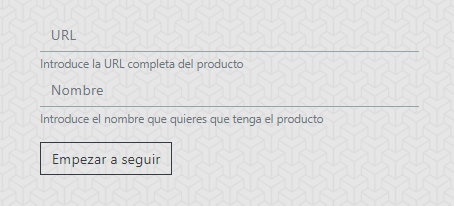

<div class="howTo">
    <div class="container">
        <div class="step1">
            
            <p>Introduce la URL del producto que quieras trackear, así como el nombre con el que quieras que se guarde.<br> De momento se soporta únicamente productos de Amazon.
            </p>
        </div>
        <div class="step2">
            
            <p>A la derecha del formulario, verás una tabla con todos los productos que estás siguiendo.<br> Al clickar en el nombre, podrás ir a la página de Amazon, así como ver un pequeño resumen de sus precios.<br> Finalmente, podrás dejar de seguir
                el producto si clickas en el aspa.<br> No te preocupes, el producto tan solo desaparecerá de tu tabla, por lo que si quieres volver a seguirlo en un futuro, tendrás aun más datos.
            </p>
        </div>
        <div class="step3">
            
            <p>Si clickas en alguno de los objetos, obtendras una gráfica detallada con todos sus cambios de precio.
            </p>
        </div>
    </div>
</div>